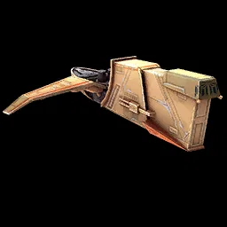
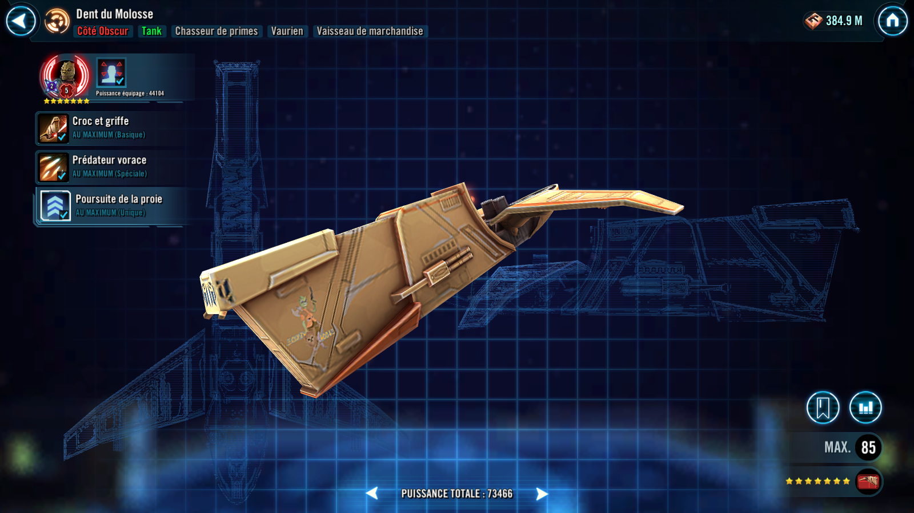
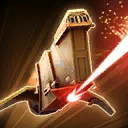
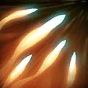

Hound's Tooth
Sustainable Bounty Hunter Tank that debilitates enemies

Sustainable Bounty Hunter Tank that debilitates enemies

Hound's Tooth gains 25% Protection Up (stacking) for 2 turns whenever it takes damage from an enemy's attack. While not Taunting, it has +50% Tenacity and gains +25% Turn Meter whenever another ally takes damage from an enemy's attack. Attacks that deal damage multiple times will not trigger these effects more than once. When Hound's Tooth loses Taunt, it gains Taunt for 1 turn if an enemy is Breached.
While Hound's Tooth is active, Breached enemies have -25% Evasion.

Deal Physical damage to target enemy and dispel all debuffs on Hound's Tooth. Hound's Tooth recovers +10% Health and +10% Protection if it has Taunt.

Deal Physical damage to target enemy and inflict Breach for 3 turns, which can't be Evaded. Hound's Tooth gains Taunt for 2 turns.
Enter Battle : Grant all other allies +25% Tenacity. Other Bounty Hunter allies also gain +5% Counter Chance (stacking) whenever they Resist a detrimental effect.